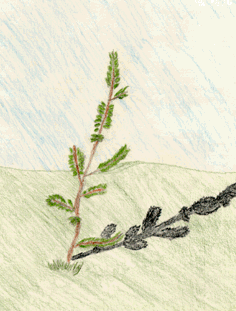
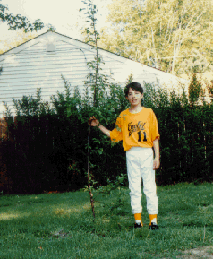

Student Project
Kyle


The tree I chose is a baby apple tree. It is a very noteworthy tree to me because it grew from a seed in our compost pile. This is a baby tree, not many leaves, not many branches. It is 3 years old and is in my backyard. I feel short next to the tree now because it is so tall. It was shorter than me last year, but now it passed me up! It is 86 inches tall and 2 3/4 inches around at its base. I don't know what kind of apple tree it is, but I hope it's a Granny Smith tree because...I love 'em!
-Kyle
c. Kyle
Grade 4
Thomas Jefferson Magnet School
Euclid, Ohio USA
"Little Tree"
Pencil & Colored Pencil on Paper 9"X12"
Apple Tree
Latin Name: TBA
Age: 3 years old
Circumference at 54 inches from the base: 2 3/4 inches
Location: Euclid, Ohio USA
 Return to Main Page
Return to Main Page
June Julian jj68@nyu.edu